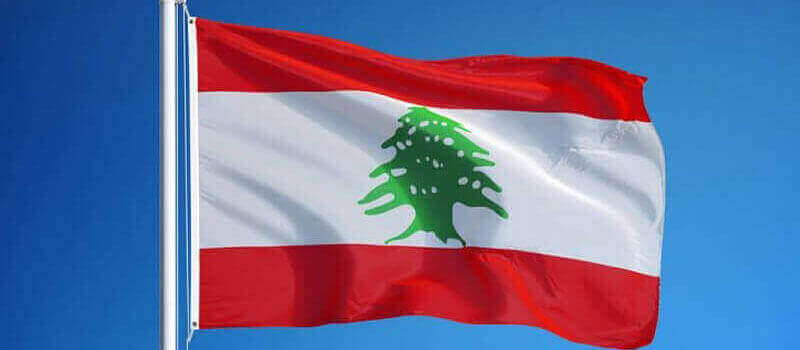
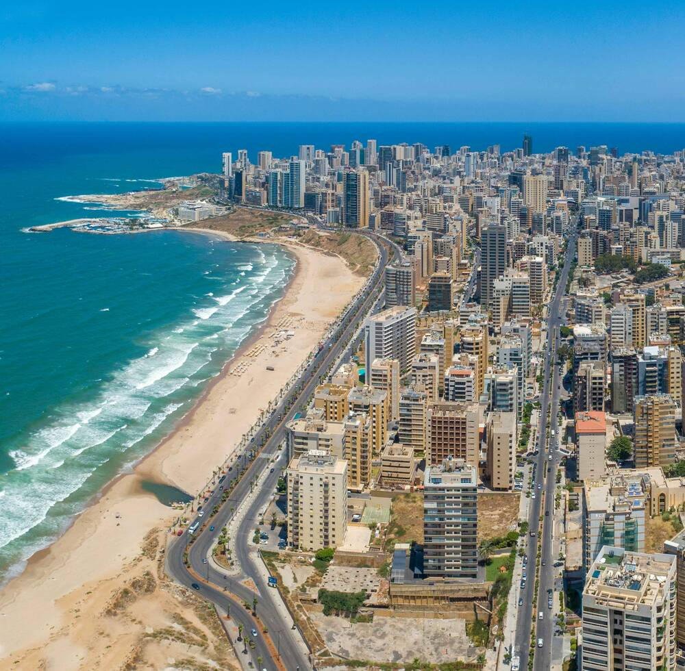

Lebanon
Lebanese Republic, is a country in Western Asia. It is located between Syria to the north and east and Israel to the south, while Cyprus lies to its west across the Mediterranean Sea; its location at the crossroads of the Mediterranean Basin and the Arabian hinterland has contributed to its rich history and shaped a cultural identity of religious diversity.[15] It is part of the Levant region of the Middle East. Lebanon is home to roughly five million people and covers an area of 10,452 square kilometres (4,036 sq mi), making it the second-smallest country in continental Asia. The official language of the state is Arabic, while French is also formally recognized; Lebanese Arabic is used alongside Modern Standard Arabic throughout the country.
The earliest evidence of civilization in Lebanon dates back to 5,000 BCE.From c. 3200–539 BC, it was home to the flourishing Phoenician civilization before being annexed by various Near Eastern empires. In 64 BC, the Roman Empire conquered the region, and the region became a major center for Christianity under the Byzantine Empire.[17] In the 7th century, the Muslim conquest of the Levant established caliphal rule. The 11th century saw the start of the Crusades and the establishment of Crusader States in the region only for it to be later reclaimed by the Ayyubids and Mamluks before being ceded to the Ottoman Empire in the 16th century. Under Sultan Abdulmejid I, the first Lebanese protostate took form in the 19th century as the Mount Lebanon Mutasarrifate, created as a home for the Maronite Christians under the Tanzimat reforms.
Old towns still form the center or core of many Lebanese cities and towns. The majority of these old towns dot the coastline of Lebanon, with only a small number of them found in the country's interior. This reflects the nature of the Lebanese people who were a maritime culture largely involved in trade and commerce.